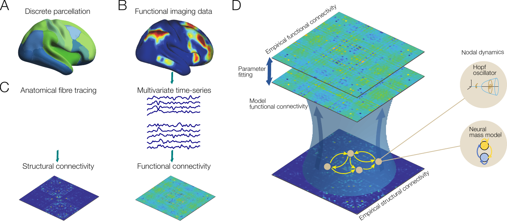
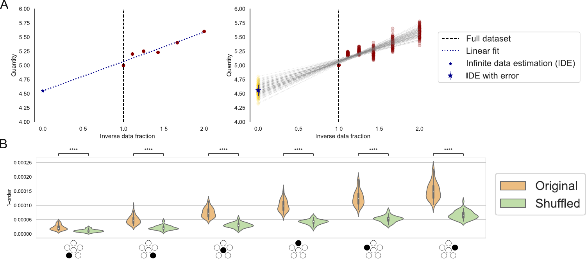
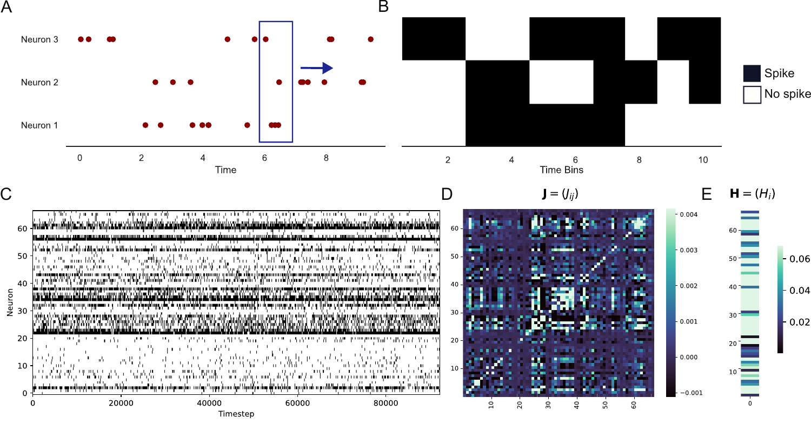
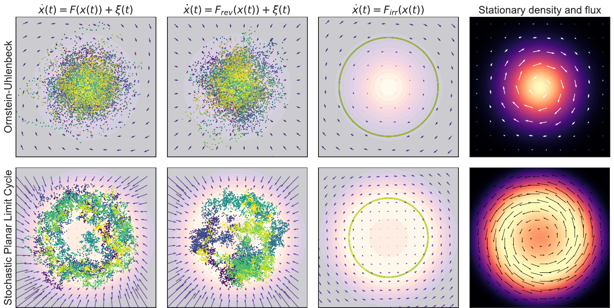
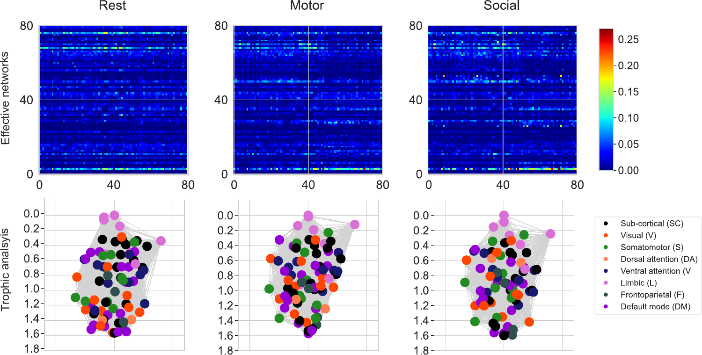
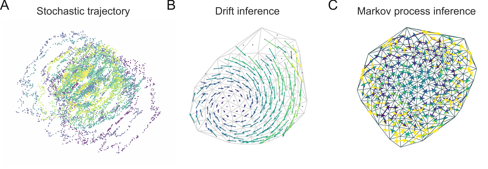
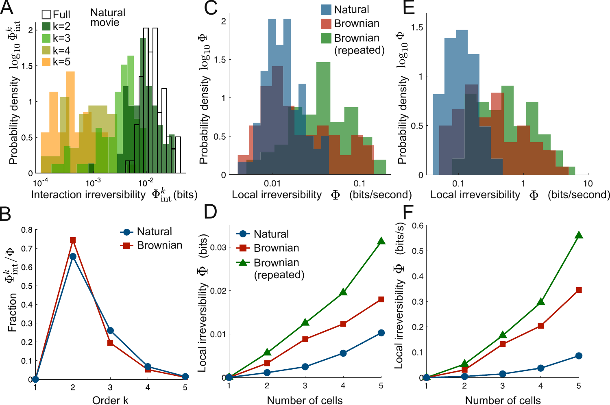
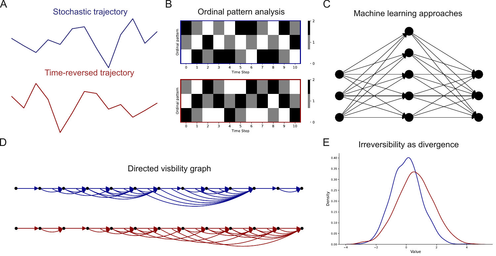
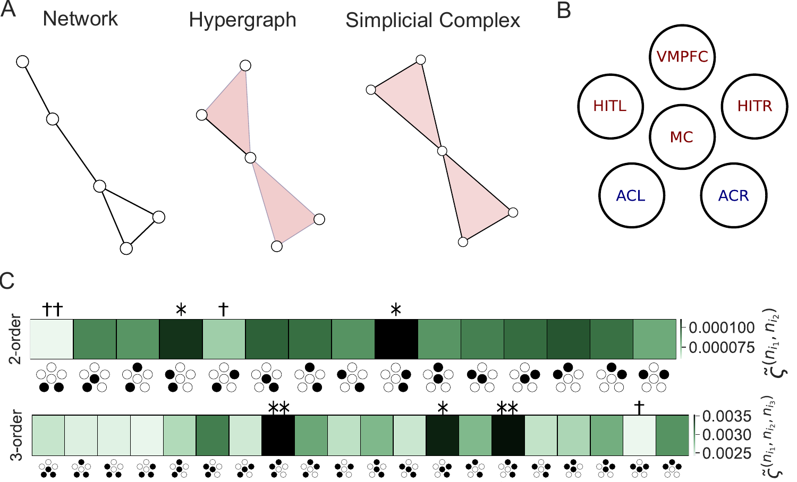

Presenter
Uzma Yousaf | s2026139003
Instructor
Prof. Dr. Zaheer Hussain Shah
Living neural networks exist permanently far from thermal equilibrium. Classical statistical physics rests on detailed balance where forward and backward states match perfectly.
Our presentation maps out how modern physicists detect, isolate, and numerically solve for this nonequilibrium signature across macroscopic and microscopic fields.
Neural assemblies execute non-linear interactions hidden at macro scales. Empirical capture depends on proxies (fMRI BOLD, MEG/EEG source fields, multi-unit electrode spiking) inherently masked by structured environmental noise and instrumentation limits.
The absolute objective: isolate, compute, and authenticate an undeniable macroscopic arrow-of-time (entropy production) signature directly from observed multi-variant timeseries.

Fig. 3 – Whole-brain generative model optimization frameworkIsolating the thermodynamic arrow of time requires choosing a specialized window into neural biology, trading off temporal resolution for spatial coverage.
| Modality | Physical Source Profile | Temporal Scale | Spatial Coverage |
|---|---|---|---|
| fMRI BOLD | Hemodynamic oxygen delivery levels | Slow (~0.5–2.0 Hz) | Whole brain (~1–2 mm voxels) |
| MEG / EEG | Post-synaptic ionic current sum fields | Ultra-fast (~1 ms) | Cortical surface macro-sensors |
| Microelectrode | Extracellular action potential voltages | Microsecond (~30 kHz) | Local microscopic groups (~100 cells) |

Fig. 10 – Irreversibility bounds vs. randomized null controls
Fig. 11 – High-density multielectrode spike train rasterConverting passive biophysical observations into exact mathematical formulations requires inverse statistical models. By optimizing continuous stochastic equations and discrete network configurations, we can compute hidden properties and explicitly measure global Entropy Production Rates (EPR).
Any continuous stationary phase-space velocity field $\mathbf{F}(\mathbf{x})$ splits cleanly into symmetric gradients and rotational elements:

Fig. 4 – Velocity field vector decomposition
Fig. 5 – Asymmetric networksGaussian Hidden Markov Models map continuous fMRI pathways into distinct hidden macro states. Transition fluxes yield the exact Schnakenberg EPR formula:

Fig. 7 – Discrete Hidden Markov states
Fig. 12 – Ising network inference
Fig. 8 – Time-series geometric mapping
Fig. 9 – Multi-node topological simplicial complexWhole-brain systems realize peak thermodynamic operational capacity near critical bifurcation boundaries.
Adjusting the global scaling factor G balances empirical functional correlations against model predictions.
| Brain State Profiling | EPR Shift Vector | Biophysical Source Mechanism |
|---|---|---|
| Active Cognitive Task Execution | Marked Elevation | Extrinsic task demands drive directional feedforward-feedback loops |
| Deep Slow-Wave Sleep (N3) | Severe Drop | Symmetric, synchronized delta slow waves restore detailed balance |
| General Anesthesia / Coma | Minimum Baseline | Loss of feedback connectivity maps into a near-reversible system |
| Schizophrenia Spectrum | Altered Topography | Deficiencies in specific Default Mode Network (DMN) arrow-of-time links |
| Analysis Vector | Experimental Architecture | Computational Engine |
|---|---|---|
| Data Handling | Acquires raw physiological signals (fMRI, MEG, Multi-unit Spikes) | Executes filtering, denoising, and Multivariate Time Series extraction |
| System Boundary | Applies anatomical coordinate parcellations to establish nodes | Constructs functional connectivity topologies and adjacency arrays |
| Statistical Control | Defines physical paradigm bounds and acquisition constraints | Generates randomized phase/shuffled null surrogates for bias validation |
| Generative Modeling | Provides static anatomical roadmaps via DTI structural profiling | Optimizes dynamic systems (Langevin, Hopf, Ising) via inverse inference |
| Metric Computation | Records raw voltage fluctuations and blood oxygenation signals | Extracts thermodynamic variables (EPR, Trophic levels, $D_{\text{KL}}$ divergence) |
Developing non-stationary inverse techniques will let us track shifting entropy production rates in real-time as cognitive processing unfolds.
"Nonequilibrium thermodynamic metrics provide an unmasked window directly into both the conscious mind and complex pathological states."
| PH‑700 Physics Topic | Experimental Physics Method | Computational Physics Method | Application in Brain Dynamics Review (2026) |
|---|---|---|---|
| Thermodynamics & entropy (2nd law, detailed balance) |
Calorimetry, energy flux proxies (fMRI BOLD, MEG) | Entropy production rate (EPR) from time series | Quantifying broken detailed balance & arrow of time in human brain (NESS); EPR as consciousness correlate (§2, §3.3) |
| Statistical mechanics (Gaussian processes, fluctuation‑dissipation) |
Repeated measurements, error estimation (σ, bias) | Maximum‑likelihood, covariance matrices, surrogate data | Linear Langevin/OUP models for resting‑state fMRI; fluctuation‑dissipation violation as nonequilibrium signature (§3.1.1) |
| Signal processing & Fourier analysis (spectral decomposition, Nyquist) |
Anti‑aliasing filters, digitisation (DAQ) | FFT, eigenmode decomposition, power spectra | Decomposing entropy production into oscillatory modes (ECoG); band‑pass filtering of MEG/EEG (§3.4.3) |
| Nonlinear dynamics & bifurcation theory (Hopf, Kuramoto, criticality) |
Stimulus‑response experiments, phase locking | Numerical integration, parameter optimisation, stability analysis | Asymmetric Hopf whole‑brain models; self‑organised criticality (avalanches); optimal information processing at critical point (§3.1.3, §4.3) |
| Curve fitting & regression (least‑squares, χ², residuals) |
Calibration curves, reference standards | Linear/nonlinear least‑squares, AR1 models, χ² minimisation | Fitting effective connectivity (GEC); autoregressive inference of directed networks (§3.1.1, §3.1.3) |
| Monte Carlo & noise reduction (ensemble averaging, variance) |
Signal averaging, shielding, repeated runs | Bootstrap resampling, Monte Carlo integration, surrogate testing | Significance testing for irreversibility; estimating EPR in kinetic Ising models; finite‑data bias correction (§3.5, §4.1) |
| Condensed matter characterisation (XRD, SEM, UV‑Vis, Raman) |
Diffraction, microscopy, optical absorption | Tauc plot, Scherrer equation, peak fitting | Physical analogy: XRD (crystal lattice) ↔ DTI structural connectome; UV‑Vis Tauc (band gap) ↔ entropy production intercept (§3.3) |
| Computational physics (numerical ODEs, ML, FFT) |
Hardware interfacing, real‑time DAQ | Numerical integration (Langevin), optimisation, neural networks | Kinetic Ising inference (MLE), TENET arrow‑of‑time classifier, FFT‑based EPR decomposition (§3.3.2, §4.1) |
Nartallo‑Kaluarachchi, R., Kringelbach, M., Deco, G., Lambiotte, R., & Goriely, A. (2026). Nonequilibrium physics of brain dynamics. Physics Reports, 1152, 1–43.
Lynn, C. W., Cornblath, E. J., Papadopoulos, L., & Bassett, D. S. (2021). Broken detailed balance and entropy production in the human brain. Proceedings of the National Academy of Sciences, 118(47), e2109888118.
Deco, G., Sanz‑Perl, Y., Bocaccio, H., Tagliazucchi, E., & Kringelbach, M. L. (2022). The INSIDE OUT framework provides precise signatures of the balance of intrinsic and extrinsic dynamics in brain states. Communications Biology, 5, Article 572.
Lynn, C. W., Holmes, C. M., Bialek, W., & Schwab, D. J. (2022). Decomposing the local arrow of time in interacting systems. Physical Review Letters, 129(11), 118101.
Deco, G., Sanz‑Perl, Y., de la Fuente, L., Sitt, J. D., Yeo, B. T. T., Tagliazucchi, E., & Kringelbach, M. L. (2023). The arrow of time of brain signals in cognition: Potential intriguing role of parts of the default mode network. Network Neuroscience, 7(3), 966–998.
Academic Recognition
Sincere gratitude is extended to Prof. Dr. Zaheer Hussain Shah for establishing the core principles of thermodynamic equilibrium systems, network inference, and advanced analytics in the curriculum of PH‑700: Techniques in Experimental & Computational Physics.